Google QUEST Q&A Labeling
Improving automated understanding of complex question answer content
Computers are really good at answering questions with single, verifiable answers. But, humans are often still better at answering questions about opinions, recommendations, or personal experiences.
…
In this competition, you’re challenged to use this new dataset to build predictive algorithms for different subjective aspects of question-answering.

The competition is Notebook-only competition. Your Notebook will re-run automatically against an unseen test set.
This competition data is small, only made of 6079 rows of train dataset.
So I think this competition is easy for beginners to participate in terms of computational resource (unless you use BERT or any other heavy models to get good score), compared to the past competition hosted by Google like Open Image Challenges which requires a lot of GPU resources to train the model.
1 | import gc |
1 | # This Python 3 environment comes with many helpful analytics libraries installed |
/kaggle/input/google-quest-challenge/test.csv
/kaggle/input/google-quest-challenge/train.csv
/kaggle/input/google-quest-challenge/sample_submission.csvData loading and data explanation
1 | %%time |
CPU times: user 188 ms, sys: 68 ms, total: 256 ms
Wall time: 260 msLet’s check each data size.
Train and test data consists of 6079 rows and 476 rows respectively.
We have 30 different target labels to predict.
Rest 10 columns are given as feature.
1 | print('train', train.shape) |
train (6079, 41)
test (476, 11)
sample_submission (476, 31)target labels
Let’s check target labels at first.
Each row is identified by question id: qa_id, and other 30 columns are target labels.
1 | sample_submission.head() |
| qa_id | question_asker_intent_understanding | question_body_critical | question_conversational | question_expect_short_answer | question_fact_seeking | question_has_commonly_accepted_answer | question_interestingness_others | question_interestingness_self | question_multi_intent | ... | question_well_written | answer_helpful | answer_level_of_information | answer_plausible | answer_relevance | answer_satisfaction | answer_type_instructions | answer_type_procedure | answer_type_reason_explanation | answer_well_written | |
|---|---|---|---|---|---|---|---|---|---|---|---|---|---|---|---|---|---|---|---|---|---|
| 0 | 39 | 0.00308 | 0.00308 | 0.00308 | 0.00308 | 0.00308 | 0.00308 | 0.00308 | 0.00308 | 0.00308 | ... | 0.00308 | 0.00308 | 0.00308 | 0.00308 | 0.00308 | 0.00308 | 0.00308 | 0.00308 | 0.00308 | 0.00308 |
| 1 | 46 | 0.00448 | 0.00448 | 0.00448 | 0.00448 | 0.00448 | 0.00448 | 0.00448 | 0.00448 | 0.00448 | ... | 0.00448 | 0.00448 | 0.00448 | 0.00448 | 0.00448 | 0.00448 | 0.00448 | 0.00448 | 0.00448 | 0.00448 |
| 2 | 70 | 0.00673 | 0.00673 | 0.00673 | 0.00673 | 0.00673 | 0.00673 | 0.00673 | 0.00673 | 0.00673 | ... | 0.00673 | 0.00673 | 0.00673 | 0.00673 | 0.00673 | 0.00673 | 0.00673 | 0.00673 | 0.00673 | 0.00673 |
| 3 | 132 | 0.01401 | 0.01401 | 0.01401 | 0.01401 | 0.01401 | 0.01401 | 0.01401 | 0.01401 | 0.01401 | ... | 0.01401 | 0.01401 | 0.01401 | 0.01401 | 0.01401 | 0.01401 | 0.01401 | 0.01401 | 0.01401 | 0.01401 |
| 4 | 200 | 0.02074 | 0.02074 | 0.02074 | 0.02074 | 0.02074 | 0.02074 | 0.02074 | 0.02074 | 0.02074 | ... | 0.02074 | 0.02074 | 0.02074 | 0.02074 | 0.02074 | 0.02074 | 0.02074 | 0.02074 | 0.02074 | 0.02074 |
5 rows × 31 columns
1 | sample_submission.columns |
Index(['qa_id', 'question_asker_intent_understanding',
'question_body_critical', 'question_conversational',
'question_expect_short_answer', 'question_fact_seeking',
'question_has_commonly_accepted_answer',
'question_interestingness_others', 'question_interestingness_self',
'question_multi_intent', 'question_not_really_a_question',
'question_opinion_seeking', 'question_type_choice',
'question_type_compare', 'question_type_consequence',
'question_type_definition', 'question_type_entity',
'question_type_instructions', 'question_type_procedure',
'question_type_reason_explanation', 'question_type_spelling',
'question_well_written', 'answer_helpful',
'answer_level_of_information', 'answer_plausible', 'answer_relevance',
'answer_satisfaction', 'answer_type_instructions',
'answer_type_procedure', 'answer_type_reason_explanation',
'answer_well_written'],
dtype='object')30 target labels consist of 21 question related labels and 9 answer related labels.
NOTE: the labels are given in the continuous range from [0, 1]. NOT binary value.
This is not a binary prediction challenge. Target labels are aggregated from multiple raters, and can have continuous values in the range [0,1]. Therefore, predictions must also be in that range.
feature columns
Let’s check feature columns one by one.
1 | feature_columns = [col for col in train.columns if col not in sample_submission.columns] |
Feature columns: ['question_title', 'question_body', 'question_user_name', 'question_user_page', 'answer', 'answer_user_name', 'answer_user_page', 'url', 'category', 'host']Each row contains question and answer information together with the original Q&A page URL of the StackExchange properties.
1 | train[feature_columns].head() |
| question_title | question_body | question_user_name | question_user_page | answer | answer_user_name | answer_user_page | url | category | host | |
|---|---|---|---|---|---|---|---|---|---|---|
| 0 | What am I losing when using extension tubes in... | After playing around with macro photography on... | ysap | https://photo.stackexchange.com/users/1024 | I just got extension tubes, so here's the skin... | rfusca | https://photo.stackexchange.com/users/1917 | http://photo.stackexchange.com/questions/9169/... | LIFE_ARTS | photo.stackexchange.com |
| 1 | What is the distinction between a city and a s... | I am trying to understand what kinds of places... | russellpierce | https://rpg.stackexchange.com/users/8774 | It might be helpful to look into the definitio... | Erik Schmidt | https://rpg.stackexchange.com/users/1871 | http://rpg.stackexchange.com/questions/47820/w... | CULTURE | rpg.stackexchange.com |
| 2 | Maximum protusion length for through-hole comp... | I'm working on a PCB that has through-hole com... | Joe Baker | https://electronics.stackexchange.com/users/10157 | Do you even need grooves? We make several pro... | Dwayne Reid | https://electronics.stackexchange.com/users/64754 | http://electronics.stackexchange.com/questions... | SCIENCE | electronics.stackexchange.com |
| 3 | Can an affidavit be used in Beit Din? | An affidavit, from what i understand, is basic... | Scimonster | https://judaism.stackexchange.com/users/5151 | Sending an "affidavit" it is a dispute between... | Y e z | https://judaism.stackexchange.com/users/4794 | http://judaism.stackexchange.com/questions/551... | CULTURE | judaism.stackexchange.com |
| 4 | How do you make a binary image in Photoshop? | I am trying to make a binary image. I want mor... | leigero | https://graphicdesign.stackexchange.com/users/... | Check out Image Trace in Adobe Illustrator. \n... | q2ra | https://graphicdesign.stackexchange.com/users/... | http://graphicdesign.stackexchange.com/questio... | LIFE_ARTS | graphicdesign.stackexchange.com |
Let’s focus on the first row of the data. You can access original page mentioned in the url column.
Only the question contains “title” (question_title), and we have question_body and answer which is given by sentences.
1 | train0 = train.iloc[0] |
URL : http://photo.stackexchange.com/questions/9169/what-am-i-losing-when-using-extension-tubes-instead-of-a-macro-lens
question_title: What am I losing when using extension tubes instead of a macro lens?
question_body : After playing around with macro photography on-the-cheap (read: reversed lens, rev. lens mounted on a straight lens, passive extension tubes), I would like to get further with this. The problems with the techniques I used is that focus is manual and aperture control is problematic at best. This limited my setup to still subjects (read: dead insects) Now, as spring is approaching, I want to be able to shoot live insects. I believe that for this, autofocus and settable aperture will be of great help.
So, one obvious but expensive option is a macro lens (say, EF 100mm Macro) However, I am not really interested in yet another prime lens. An alternative is the electrical extension tubes.
Except for maximum focusing distance, what am I losing when using tubes (coupled with a fine lens, say EF70-200/2.8) instead of a macro lens?1 | print('answer : ', train0['answer']) |
answer : I just got extension tubes, so here's the skinny.
...what am I losing when using tubes...?
A very considerable amount of light! Increasing that distance from the end of the lens to the sensor can cut your light several stops. Combined with the fact that you'll usually shoot stopped down - expect to need to increase your ISO considerably.
The fact the macro's are usually considered very very sharp, although I believe that 70-200mm 2.8 is supposed to be quite sharp.
The ultra low distortion typical of many macros.
I wouldn't worry too much about the bokeh since the DOF will still be quite limited.
Coupled on my 50mm, a full 60mm'ish extension tube results in a DOF of about a couple inches in front of the lens. On my 70-300, its probably around 2-3 feet in front of the lens to about a foot in front of the lens.When you access to the URL, you can understand that multiple answer to the single question is given in the page. But only one answer is sampled in the dataset.
Also this answer may not be the most popular answer. We can find the answer of this data in the relatively bottom part of the homepage.
Other columns are metadata, which shows question user property, answer user property and category of question.
1 | train[['url', 'question_user_name', 'question_user_page', 'answer_user_name', 'answer_user_page', 'url', 'category', 'host']] |
| url | question_user_name | question_user_page | answer_user_name | answer_user_page | url | category | host | |
|---|---|---|---|---|---|---|---|---|
| 0 | http://photo.stackexchange.com/questions/9169/... | ysap | https://photo.stackexchange.com/users/1024 | rfusca | https://photo.stackexchange.com/users/1917 | http://photo.stackexchange.com/questions/9169/... | LIFE_ARTS | photo.stackexchange.com |
| 1 | http://rpg.stackexchange.com/questions/47820/w... | russellpierce | https://rpg.stackexchange.com/users/8774 | Erik Schmidt | https://rpg.stackexchange.com/users/1871 | http://rpg.stackexchange.com/questions/47820/w... | CULTURE | rpg.stackexchange.com |
| 2 | http://electronics.stackexchange.com/questions... | Joe Baker | https://electronics.stackexchange.com/users/10157 | Dwayne Reid | https://electronics.stackexchange.com/users/64754 | http://electronics.stackexchange.com/questions... | SCIENCE | electronics.stackexchange.com |
| 3 | http://judaism.stackexchange.com/questions/551... | Scimonster | https://judaism.stackexchange.com/users/5151 | Y e z | https://judaism.stackexchange.com/users/4794 | http://judaism.stackexchange.com/questions/551... | CULTURE | judaism.stackexchange.com |
| 4 | http://graphicdesign.stackexchange.com/questio... | leigero | https://graphicdesign.stackexchange.com/users/... | q2ra | https://graphicdesign.stackexchange.com/users/... | http://graphicdesign.stackexchange.com/questio... | LIFE_ARTS | graphicdesign.stackexchange.com |
| ... | ... | ... | ... | ... | ... | ... | ... | ... |
| 6074 | http://bicycles.stackexchange.com/questions/99... | sixtyfootersdude | https://bicycles.stackexchange.com/users/134 | Matt Leo | https://bicycles.stackexchange.com/users/3340 | http://bicycles.stackexchange.com/questions/99... | CULTURE | bicycles.stackexchange.com |
| 6075 | http://bicycles.stackexchange.com/questions/25... | ash | https://bicycles.stackexchange.com/users/14519 | Daniel R Hicks | https://bicycles.stackexchange.com/users/1584 | http://bicycles.stackexchange.com/questions/25... | CULTURE | bicycles.stackexchange.com |
| 6076 | http://unix.stackexchange.com/questions/169054... | Maneating Koala | https://unix.stackexchange.com/users/60445 | BG Bruno | https://unix.stackexchange.com/users/68208 | http://unix.stackexchange.com/questions/169054... | TECHNOLOGY | unix.stackexchange.com |
| 6077 | http://mathoverflow.net/questions/57337 | MrB | https://mathoverflow.net/users/2189 | angela | https://mathoverflow.net/users/4267 | http://mathoverflow.net/questions/57337 | SCIENCE | mathoverflow.net |
| 6078 | http://diy.stackexchange.com/questions/2701/wh... | Doug T. | https://diy.stackexchange.com/users/321 | Scivitri | https://diy.stackexchange.com/users/113 | http://diy.stackexchange.com/questions/2701/wh... | LIFE_ARTS | diy.stackexchange.com |
6079 rows × 8 columns
Exploratory Data Analysis
Let’s check each column of the data more carefully.
target label distribution
1 | target_cols = ['question_asker_intent_understanding', |
1 | train[target_cols] |
| question_asker_intent_understanding | question_body_critical | question_conversational | question_expect_short_answer | question_fact_seeking | question_has_commonly_accepted_answer | question_interestingness_others | question_interestingness_self | question_multi_intent | question_not_really_a_question | ... | question_well_written | answer_helpful | answer_level_of_information | answer_plausible | answer_relevance | answer_satisfaction | answer_type_instructions | answer_type_procedure | answer_type_reason_explanation | answer_well_written | |
|---|---|---|---|---|---|---|---|---|---|---|---|---|---|---|---|---|---|---|---|---|---|
| 0 | 1.000000 | 0.333333 | 0.000000 | 0.000000 | 0.000000 | 0.0 | 1.000000 | 1.000000 | 0.000000 | 0.0 | ... | 1.000000 | 1.000000 | 0.666667 | 1.000000 | 1.000000 | 0.800000 | 1.000000 | 0.000000 | 0.000000 | 1.000000 |
| 1 | 1.000000 | 1.000000 | 0.000000 | 0.500000 | 1.000000 | 1.0 | 0.444444 | 0.444444 | 0.666667 | 0.0 | ... | 0.888889 | 0.888889 | 0.555556 | 0.888889 | 0.888889 | 0.666667 | 0.000000 | 0.000000 | 0.666667 | 0.888889 |
| 2 | 0.888889 | 0.666667 | 0.000000 | 1.000000 | 1.000000 | 1.0 | 0.666667 | 0.444444 | 0.333333 | 0.0 | ... | 0.777778 | 0.777778 | 0.555556 | 1.000000 | 1.000000 | 0.666667 | 0.000000 | 0.333333 | 1.000000 | 0.888889 |
| 3 | 0.888889 | 0.666667 | 0.666667 | 1.000000 | 1.000000 | 1.0 | 0.444444 | 0.444444 | 0.000000 | 0.0 | ... | 0.888889 | 0.833333 | 0.333333 | 0.833333 | 1.000000 | 0.800000 | 0.000000 | 0.000000 | 1.000000 | 1.000000 |
| 4 | 1.000000 | 0.666667 | 0.000000 | 1.000000 | 1.000000 | 1.0 | 0.666667 | 0.666667 | 0.000000 | 0.0 | ... | 1.000000 | 1.000000 | 0.666667 | 1.000000 | 1.000000 | 0.800000 | 1.000000 | 0.000000 | 1.000000 | 1.000000 |
| ... | ... | ... | ... | ... | ... | ... | ... | ... | ... | ... | ... | ... | ... | ... | ... | ... | ... | ... | ... | ... | ... |
| 6074 | 1.000000 | 0.777778 | 0.000000 | 1.000000 | 1.000000 | 1.0 | 0.888889 | 0.888889 | 0.333333 | 0.0 | ... | 0.777778 | 1.000000 | 0.555556 | 1.000000 | 1.000000 | 0.866667 | 0.000000 | 0.000000 | 0.000000 | 0.888889 |
| 6075 | 1.000000 | 0.777778 | 0.000000 | 1.000000 | 0.666667 | 0.5 | 0.777778 | 0.777778 | 0.000000 | 0.0 | ... | 0.777778 | 0.888889 | 0.555556 | 1.000000 | 1.000000 | 0.733333 | 0.666667 | 0.333333 | 0.000000 | 0.888889 |
| 6076 | 0.888889 | 0.555556 | 0.000000 | 0.666667 | 0.333333 | 1.0 | 0.444444 | 0.333333 | 0.000000 | 0.0 | ... | 0.444444 | 0.888889 | 0.555556 | 0.888889 | 0.888889 | 0.800000 | 1.000000 | 0.000000 | 0.333333 | 0.555556 |
| 6077 | 1.000000 | 0.444444 | 0.333333 | 0.000000 | 0.000000 | 0.0 | 0.777778 | 0.555556 | 1.000000 | 0.0 | ... | 1.000000 | 0.888889 | 0.555556 | 1.000000 | 1.000000 | 0.533333 | 0.000000 | 0.333333 | 0.666667 | 1.000000 |
| 6078 | 1.000000 | 1.000000 | 0.333333 | 0.500000 | 1.000000 | 0.5 | 0.777778 | 0.777778 | 0.666667 | 0.0 | ... | 1.000000 | 0.888889 | 0.555556 | 1.000000 | 0.888889 | 0.733333 | 0.000000 | 0.000000 | 1.000000 | 1.000000 |
6079 rows × 30 columns
1 | fig, axes = plt.subplots(6, 5, figsize=(18, 15)) |
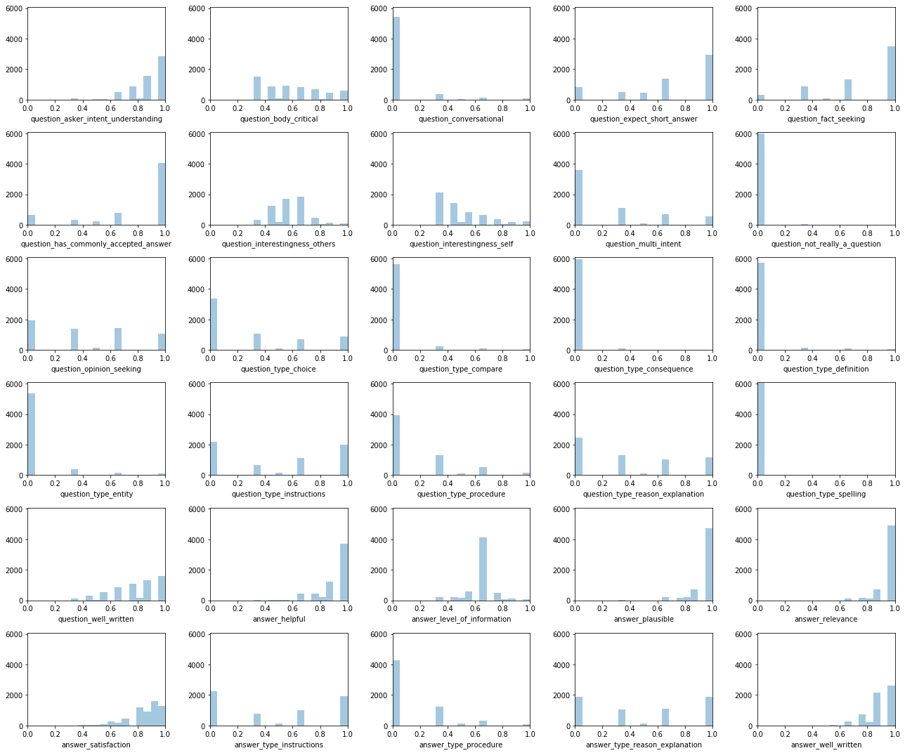
It seems some of the labels are quite imbalanced. For example “question_not_really_a_question” is almost always 0, which means most of the question in the data is not a noisy data but an “actual question”.
Nan values
There is no nan values in the data.
1 | train.isna().sum() |
qa_id 0
question_title 0
question_body 0
question_user_name 0
question_user_page 0
answer 0
answer_user_name 0
answer_user_page 0
url 0
category 0
host 0
question_asker_intent_understanding 0
question_body_critical 0
question_conversational 0
question_expect_short_answer 0
question_fact_seeking 0
question_has_commonly_accepted_answer 0
question_interestingness_others 0
question_interestingness_self 0
question_multi_intent 0
question_not_really_a_question 0
question_opinion_seeking 0
question_type_choice 0
question_type_compare 0
question_type_consequence 0
question_type_definition 0
question_type_entity 0
question_type_instructions 0
question_type_procedure 0
question_type_reason_explanation 0
question_type_spelling 0
question_well_written 0
answer_helpful 0
answer_level_of_information 0
answer_plausible 0
answer_relevance 0
answer_satisfaction 0
answer_type_instructions 0
answer_type_procedure 0
answer_type_reason_explanation 0
answer_well_written 0
dtype: int641 | test.isna().sum() |
qa_id 0
question_title 0
question_body 0
question_user_name 0
question_user_page 0
answer 0
answer_user_name 0
answer_user_page 0
url 0
category 0
host 0
dtype: int64Category
The dataset consists of 5 categories: “Technology”, “Stackoverflow”, “Culture”, “Science”, “Life arts”.
Train/Test distribution is almost same.
1 | train_category = train['category'].value_counts() |
1 | fig, axes = plt.subplots(1, 2, figsize=(12, 6)) |
Train/Test category distribution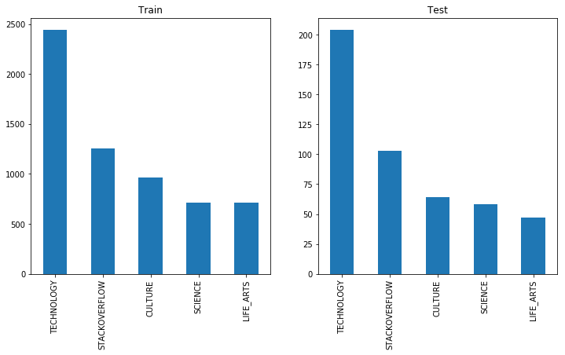
Word Cloud visualization
Let’s see what kind of word are used for question and answer. Also let’s check the difference between train and test.
1 | from wordcloud import WordCloud |
1 | print('Training data Word Cloud') |
Training data Word Cloud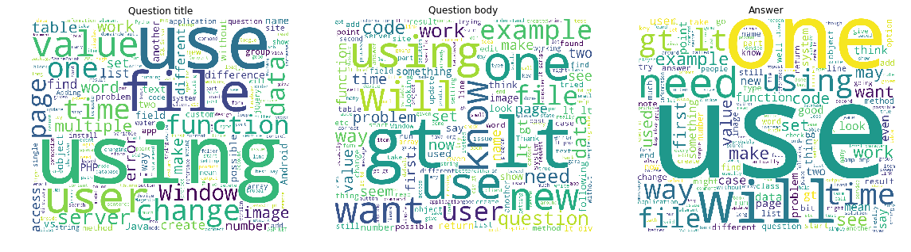
1 | print('Test data Word Cloud') |
Test data Word Cloud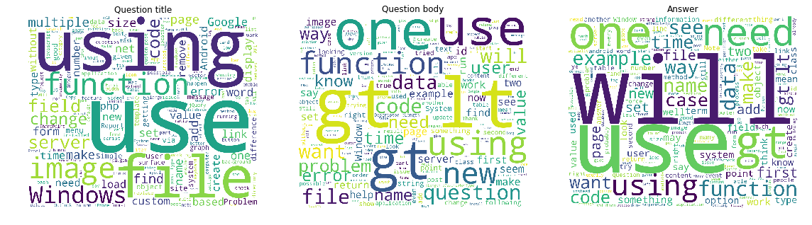
It seems common word usage distribution is similar between train & test dataset!
Correlation in target labels
I could find following 3 pairs are correlated:
- “question_type_instructions” & “answer_type_instructions”
- “question_type_procedure” & “answer_type_procedure”
- “question_type_reason_explanation” & “answer_type_reason_explanation”
This is reasonable that same evaluation on both question & answer are correlated.
On the other hand, Anticorrelation pattern can be found on following pairs:
- “question_fact_seeking” & “question_opinion_seeking”
- “answer_type_instruction” & “answer_type_reason_explanation”
I think this is also reasonable that question that asks fact & opinion conflicts.
And answer which shows instruction or reason explanation also conflicts.
1 | fig, ax = plt.subplots(figsize=(18, 18)) |
<matplotlib.axes._subplots.AxesSubplot at 0x7f286829d198>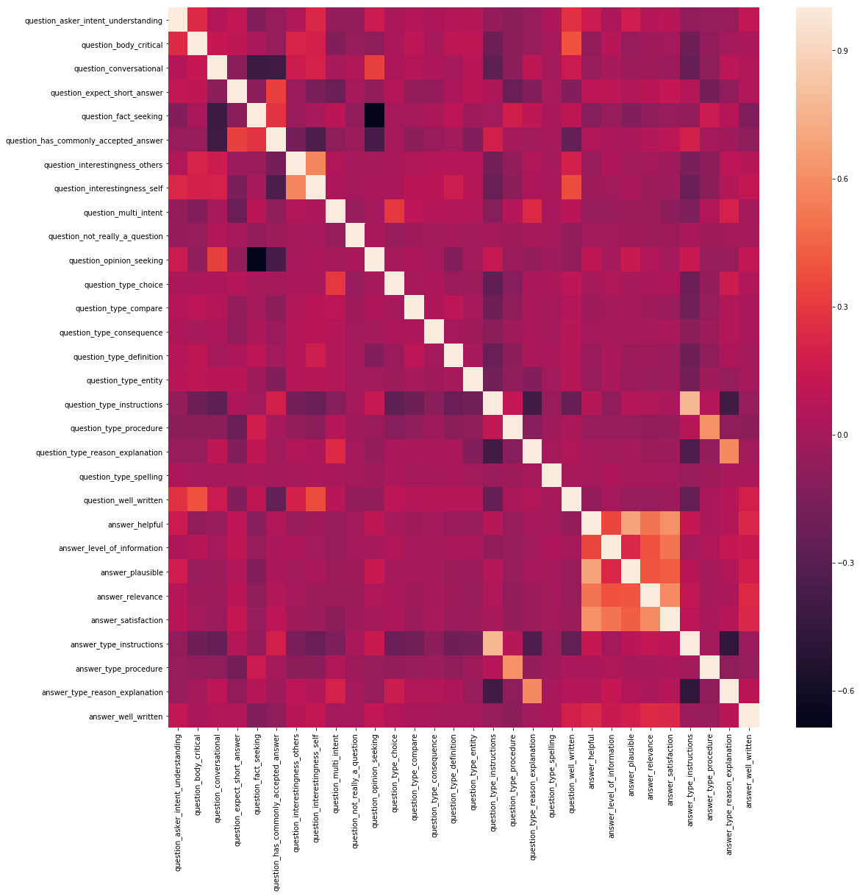
User check
The dataset contains question user and answer user information. This may be because user attribution is impotant, same user tend to answer same kind of question and same answer user tends to answer in similar quality.
Let’s check if how the user are distributed, and the user are duplicated in train/test or not.
1 | train_question_user = train['question_user_name'].unique() |
Number of unique question user in train: 3215
Number of unique question user in test : 467
Number of unique question user in both train & test : 371 | train_answer_user = train['answer_user_name'].unique() |
Number of unique answer user in train: 4114
Number of unique answer user in test : 363
Number of unique answer user in both train & test : 29Seems several users are in both train & test dataset.
Also, it seems many users ask question and answer.
1 | print('Number of unique user in both question & anser in train : ', len(set(train_answer_user) & set(train_question_user))) |
Number of unique user in both question & anser in train : 405
Number of unique user in both question & anser in train : 27So these user information maybe important to predict test dataset!
Simple feature engineering
Now, I will proceed simple feature engineering and check if it explains data well or not.
- Number of words in question title, body and answer.
- question_user’s question count in train.
- answer_user’s answer count in train.
Work in progress… Maybe I will write in another kernel…
Number of words
1 | def char_count(s): |
1 | train['question_title_n_chars'] = train['question_title'].apply(char_count) |
Number of chars and words in Question title
1 | fig, axes = plt.subplots(1, 2, figsize=(12, 6)) |
<matplotlib.legend.Legend at 0x7f2861dd5c18>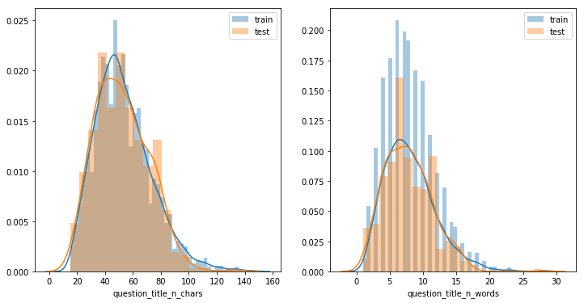
Number of chars and words in Question body
1 | fig, axes = plt.subplots(1, 2, figsize=(12, 6)) |
<matplotlib.legend.Legend at 0x7f285cf96630>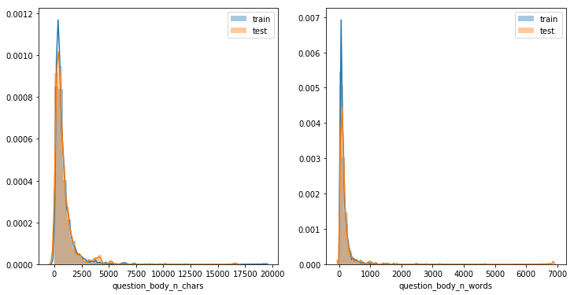
Outlier has too long, let’s cut these outlier for visualization.
1 | train['question_body_n_chars'].clip(0, 5000, inplace=True) |
<matplotlib.legend.Legend at 0x7f2861d98f28>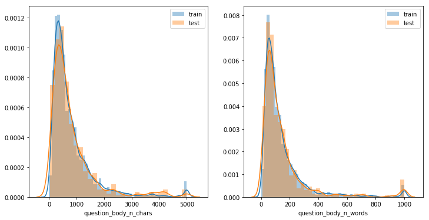
Number of chars and words in answer
Answer number chars/words distribution is similar to question body.
1 | train['answer_n_chars'].clip(0, 5000, inplace=True) |
<matplotlib.legend.Legend at 0x7f2869a2b208>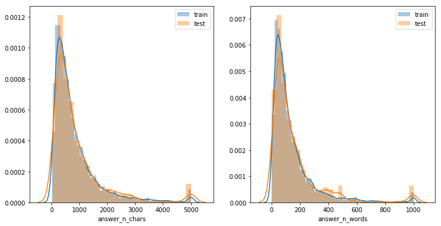
Are these feature useful for predicting target values?
Let’s check correlation with target values.
1 | from scipy.spatial.distance import cdist |
1 | number_feature_cols = ['question_title_n_chars', 'question_title_n_words', 'question_body_n_chars', 'question_body_n_words', 'answer_n_chars', 'answer_n_words'] |
1 | corr_df |
| question_asker_intent_understanding | question_body_critical | question_conversational | question_expect_short_answer | question_fact_seeking | question_has_commonly_accepted_answer | question_interestingness_others | question_interestingness_self | question_multi_intent | question_not_really_a_question | ... | question_well_written | answer_helpful | answer_level_of_information | answer_plausible | answer_relevance | answer_satisfaction | answer_type_instructions | answer_type_procedure | answer_type_reason_explanation | answer_well_written | |
|---|---|---|---|---|---|---|---|---|---|---|---|---|---|---|---|---|---|---|---|---|---|
| question_title_n_chars | 0.100554 | 0.314277 | 0.034306 | -0.031365 | -0.035100 | -0.041826 | 0.049084 | 0.060665 | 0.030113 | -0.023643 | ... | 0.196085 | -0.000519 | 0.018080 | 0.017632 | -0.009862 | 0.009581 | -0.069191 | 0.004087 | 0.024343 | 0.008165 |
| question_title_n_words | 0.141260 | 0.370465 | 0.031890 | -0.019632 | -0.035725 | -0.043174 | 0.077893 | 0.089153 | 0.027218 | -0.034874 | ... | 0.253358 | -0.001145 | 0.012467 | 0.021827 | -0.010214 | 0.007270 | -0.059162 | -0.004147 | 0.003671 | 0.012139 |
| question_body_n_chars | -0.116880 | -0.259979 | 0.002659 | -0.105966 | -0.087534 | -0.038701 | -0.099744 | -0.105509 | 0.044897 | 0.010407 | ... | -0.135832 | -0.003389 | -0.020945 | -0.002416 | 0.031334 | -0.024069 | 0.153993 | 0.072353 | 0.009587 | -0.026932 |
| question_body_n_words | -0.103024 | -0.242913 | 0.002077 | -0.088583 | -0.089874 | -0.032784 | -0.092080 | -0.099233 | 0.034009 | 0.013857 | ... | -0.129099 | 0.003929 | -0.015209 | 0.003125 | 0.033548 | -0.018410 | 0.157553 | 0.065534 | -0.003972 | -0.034319 |
| answer_n_chars | 0.009147 | -0.019231 | 0.054529 | -0.120406 | -0.055029 | -0.056472 | 0.038978 | 0.048306 | 0.122885 | -0.023333 | ... | 0.040774 | 0.101121 | 0.374028 | 0.056591 | 0.081740 | 0.172773 | -0.041012 | 0.069276 | 0.209418 | 0.072056 |
| answer_n_words | 0.012057 | -0.018491 | 0.055402 | -0.109595 | -0.060784 | -0.059186 | 0.041210 | 0.048392 | 0.109799 | -0.022149 | ... | 0.037305 | 0.092361 | 0.355994 | 0.054886 | 0.078011 | 0.160919 | -0.042763 | 0.063125 | 0.196051 | 0.061938 |
6 rows × 30 columns
1 | fig, ax = plt.subplots(figsize=(25, 5)) |
<matplotlib.axes._subplots.AxesSubplot at 0x7f285efe4a20>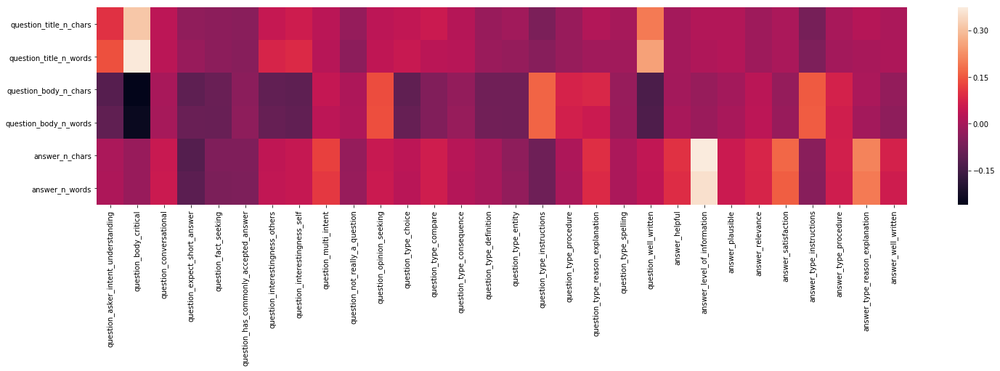
We can see following relationship
- length of answer is correlated with “answer_level_of_information”.
- length of question_title is correlated with “question_body_critical” and length of question body is anticorrelated with it.
- length of question_body is anticorrelated with “question_well_written”
Number of question or answer by user
1 | num_question = train['question_user_name'].value_counts() |
1 | number_feature_cols = ['num_answer_user', 'num_question_user'] |
1 | fig, ax = plt.subplots(figsize=(30, 2)) |
<matplotlib.axes._subplots.AxesSubplot at 0x7f2869c51390>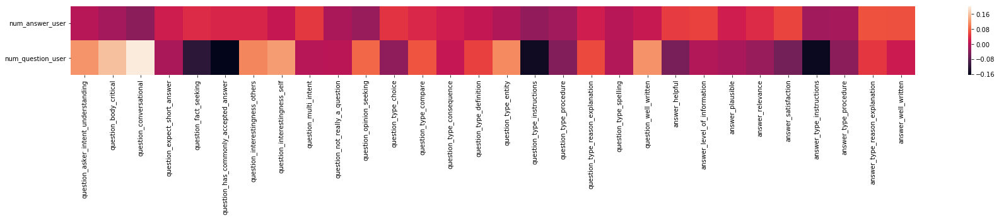
Although correlation scale is small and it might not be a “true correlation”, I can see following pattern:
num_question_userandquestion_conversationalis correlated: People who post question a lot tend to ask question in conversational form.
1 |
That’s all for the start introduction of this competition!